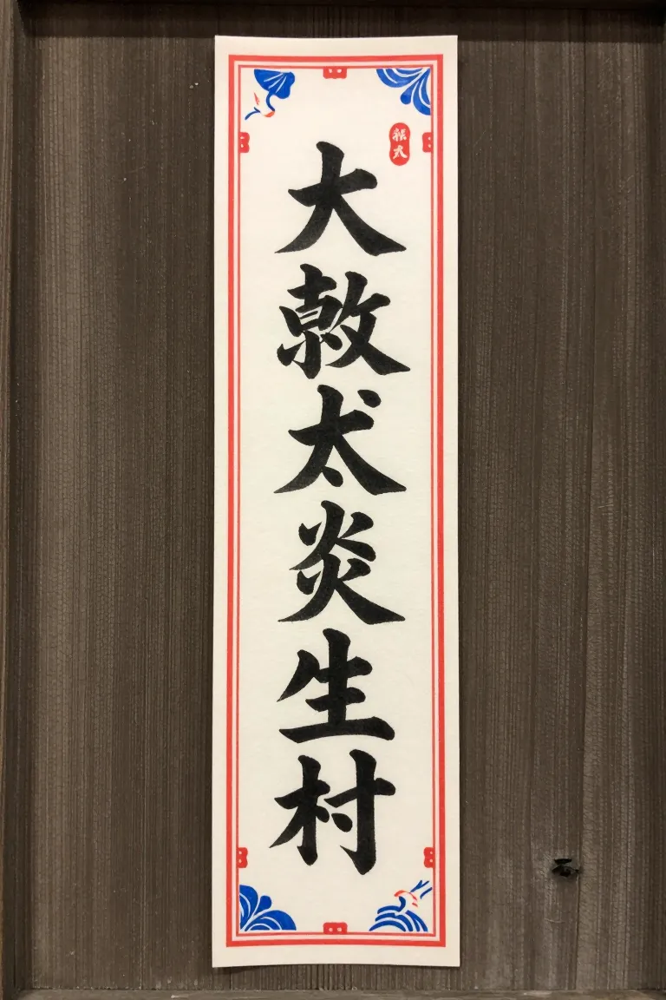

Pilgrims pasted small woodblock name slips on shrine gates. Collectors later swapped decorated slips in clubs, and artists such as Hiroshige designed slips in many colours. Each slip is 58 mm by 173 mm.

Core thesis
A name on a slip of paper can be a prayer, a signature and a small piece of art at the same time.
Design principles
Print a slip of 58 mm by 173 mm, a ratio of 1:3, with a frame about 48 mm by 144 mm.
Set the name in bold lettering in a block of one colour, and make it the largest mark on the slip.
Add an ornamental border, and one small image such as a wave, a crest, a flower or a mythical beast.
Use 2–8 colours, in vermilion, indigo and black, with a transparent overprint.
Print on small sheets of washi with a baren, in runs of several hundred slips.
For an exchange slip, add the club name and the year, and a design that fits the event.
Make the slip so that a person can paste it on a gate, with the name still easy to read.